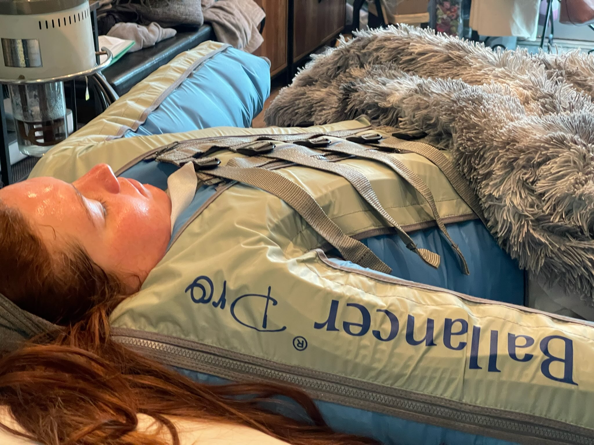
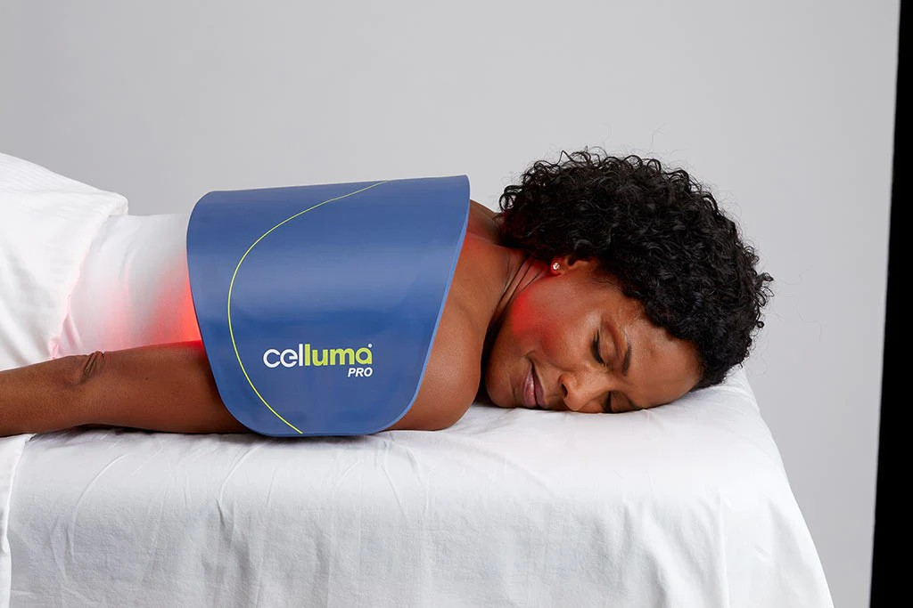
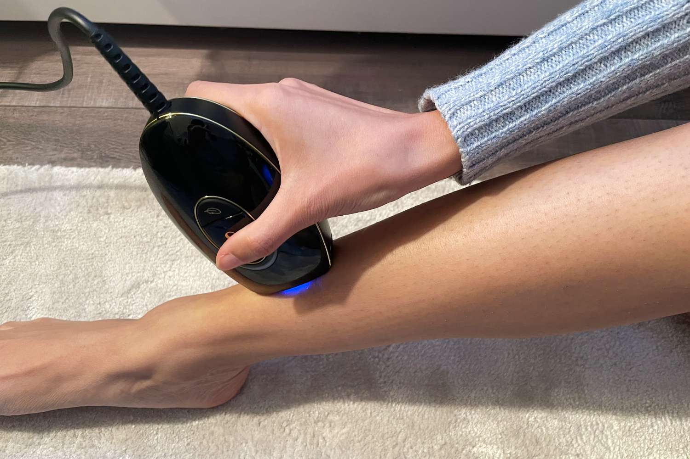

Introducing the Balancer Pro!
The Ballancer Pro is a groundbreaking state-of-the-art compression therapy system that delivers a multi-faceted and effective answer to body maintenance, beauty and wellness. By stimulating the lymphatic system, the Ballancer Pro brings fast and reliable results in the most comfortable setting. The system gently and thoroughly decongests problem areas of the body and helps release toxins faster. The Ballancer Pro is FDA Approved and Non-invasive.
Introducing the Celluma!
Experiance a transformative experience with our Celluma DELUX LED Light Therapy. Designed to envelop your entire body, this treatment harnesses the power of varied light wavelengths to rejuvenate the skin, ease muscle and joint discomfort, and promote overall well-being.
Introducing the Superfrecator!
Meet the Superfrecator – the epitome of advanced therapeutic technology. Tailored to enhance physical rehabilitation and holistic wellness, the Superfractor is designed to rejuvenate your body and mind. Harnessing innovative techniques, the Superfractor accelerates the body's natural healing process, ensuring a speedy and efficient recovery. Its ergonomic design and user-friendly interface promise a seamless and tranquil experience. Just like its predecessor, the Superfrecactor is FDA Approved and Non-invasive.
Introducing the Radiancy Machine!
Step into the next generation of skin rejuvenation with the Radiancy Machine – a paragon of Intense Pulsed Light (IPL) technology. This state-of-the-art machine harnesses the power of specific light pulses to treat a multitude of skin concerns and conditions, from uneven skin tone to signs of aging, ensuring a luminous and youthful complexion. The Radiancy Machine promises precision, efficiency, and safety, revolutionizing non-invasive aesthetic treatments. Dive into a transformative experience that brings out your skin's natural brilliance while also promoting holistic wellness. Upholding a legacy of excellence, the Radiancy Machine is FDA Approved and Non-invasive.